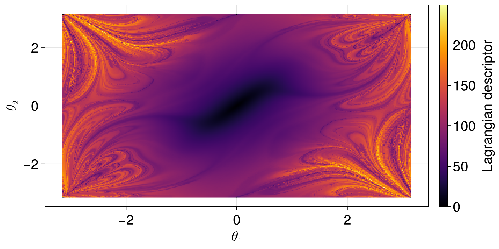

Double pendulum
The double pendulum, with two equal masses on rods of equal length, in units where the masses, the lengths and the acceleration of gravity are equal to one, is described by the angles $\theta_1$ and $\theta_2$ of the rods with the vertical and their angular velocities $\omega_1$ and $\omega_2$:
\[\begin{cases} \dot\theta_1 = \omega_1, \\ \dot\theta_2 = \omega_2, \\ \dot\omega_1 = \dfrac{-3\sin\theta_1 - \sin(\theta_1 - 2\theta_2) - 2\sin\Delta\,(\omega_2^2 + \omega_1^2\cos\Delta)}{2 - \cos 2\Delta}, \\[1ex] \dot\omega_2 = \dfrac{2\sin\Delta\,(2\omega_1^2 + 2\cos\theta_1 + \omega_2^2\cos\Delta)}{2 - \cos 2\Delta}, \end{cases}\]
with $\Delta = \theta_1 - \theta_2$. Its phase space is four-dimensional, and we compute the Lagrangian descriptors on the slice of initial conditions at rest, $\omega_1 = \omega_2 = 0$, in the components $\theta_1$ and $\theta_2$.
using LagrangianDescriptors, OrdinaryDiffEq, CairoMakie
using LinearAlgebra: norm
function doublependulum!(du, u, p, t)
θ1, θ2, ω1, ω2 = u
Δ = θ1 - θ2
den = 2 - cos(2Δ)
du[1] = ω1
du[2] = ω2
du[3] = (-3sin(θ1) - sin(θ1 - 2θ2) - 2sin(Δ) * (ω2^2 + ω1^2 * cos(Δ))) / den
du[4] = 2sin(Δ) * (2ω1^2 + 2cos(θ1) + ω2^2 * cos(Δ)) / den
end
prob = ODEProblem(doublependulum!, zeros(4), (0.0, 10.0))
M(du, u, p, t) = norm(du)
uu0 = [[θ1, θ2, 0.0, 0.0] for θ2 in range(-π, π, length = 301), θ1 in range(-π, π, length = 301)]
lagsol = solve(LagrangianDescriptorProblem(prob, M, uu0), Tsit5())
fig, ax, plt = heatmap(lagsol; axis = (xlabel = L"\theta_1", ylabel = L"\theta_2"))
Colorbar(fig[1, 2], plt; label = "Lagrangian descriptor")
fig
Near the stable equilibrium at the origin, the motion is regular, made of small oscillations, and the descriptor varies smoothly. Released from larger angles, the double pendulum has enough energy for its rods to flip over, and the motion becomes chaotic, with intricate structures that become finer as the time window grows.